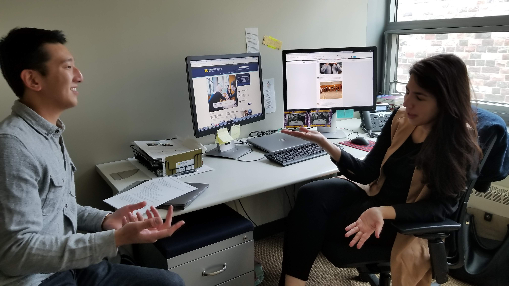
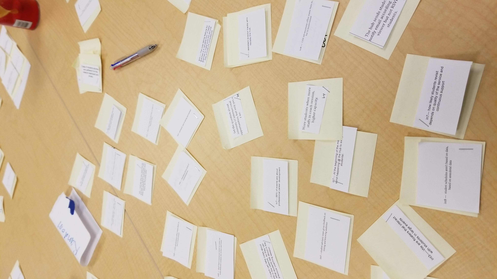
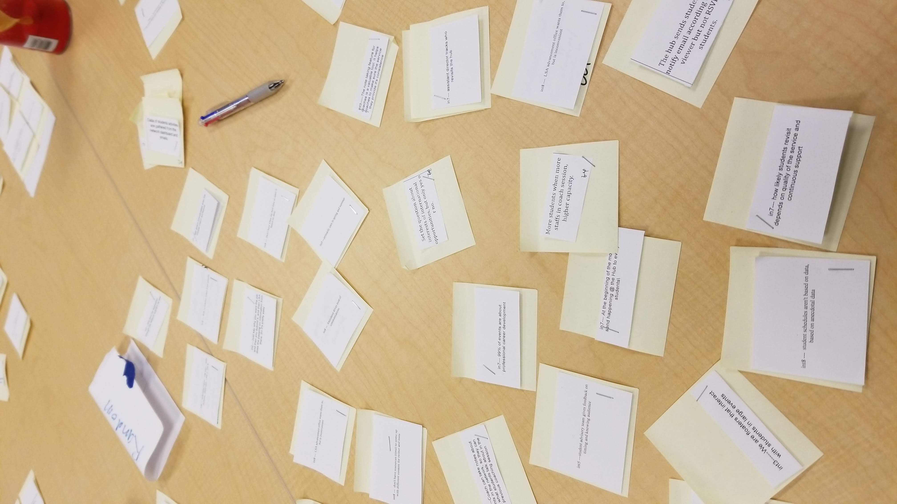
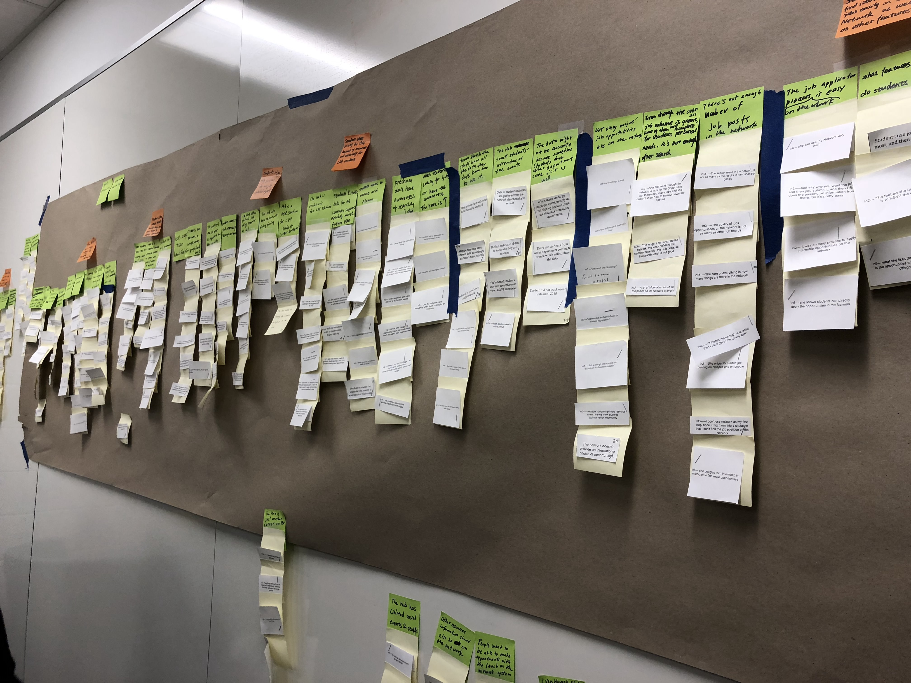
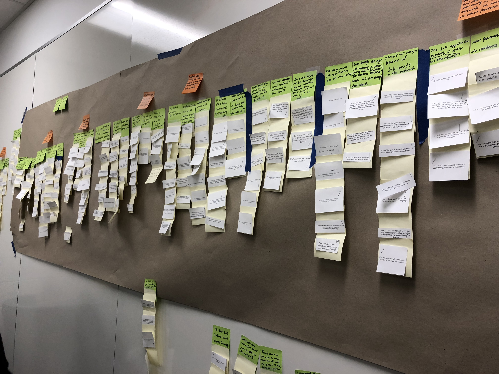
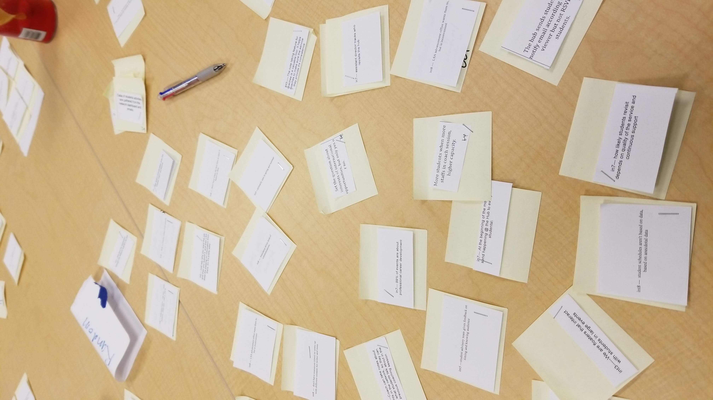
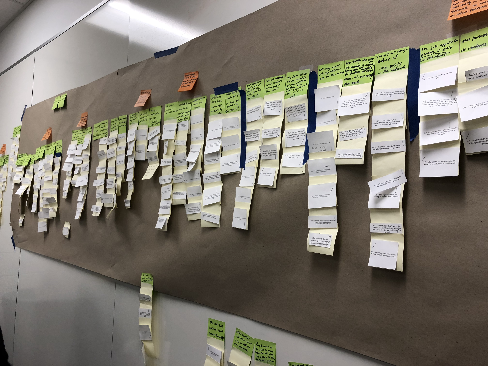

Contextual Inquiry
Roles: User Researcher, Interviewer, Consultant, Editor
Objective: The HUB is an opportunity center exclusively for College of Literature, Science, and the Arts (LSA).
Key to the organization’s operation is the emphasis that a student’s major does not have to define
their career path. My team and I evaluated the current communication practices in order to offer
recommendations to improve engagement strategies for the Opportunity HUB Network.

 


 


